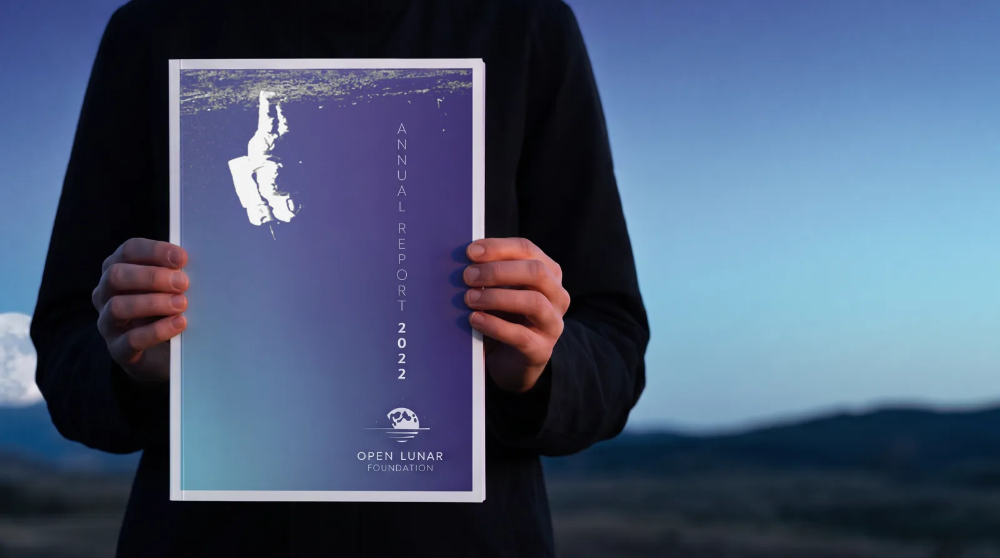
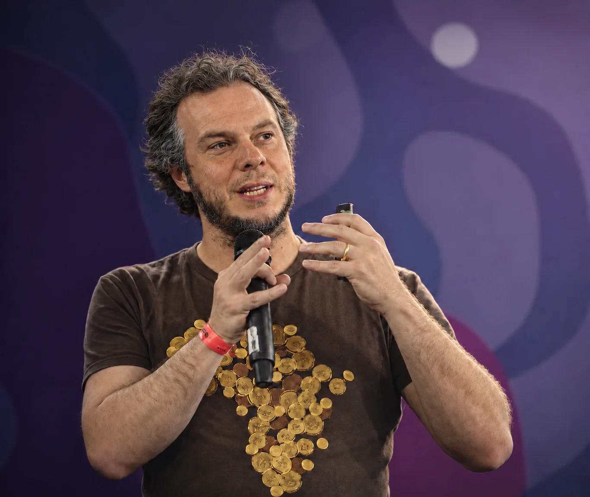

Editorial · USA
Open Lunar Foundation, Annual Report
In its own words: "an independent convener for projects and partnerships enabling lunar stewardship."




Creative Director & Brand Designer.
30+ years designing with meaning.
I'm Renato Waru. I help companies find what they truly mean and turn it into brands people recognize, trust and remember.
Speaking on design with meaning at Pixel Show
Positioning, identity and systems
that hold up at scale.
Complex content, made clear
and worth reading.
From the name to the label, products people notice and remember.


Editorial · USA
In its own words: "an independent convener for projects and partnerships enabling lunar stewardship."

Packaging · Concept · Brazil
A ship, a year and one oversized numeral, for a wine bridging Portugal and Brazil.

Packaging · Brazil
A black and white identity that stands out in a category full of color.


Editorial · Australia
A collage cover: every time you pick it up, you notice something new.


Brand Identity · Finance · Brazil
Solid, modern, elegant: a monogram assembled from modular pieces.


Brand Identity · Brazil
A continuous-line M for a recycled wood supplier: logo, photo watermark and fleet livery.


Brand Identity · Strategy Consulting · Brazil
A modern wordmark for a business strategy and branding firm led by a senior strategist.


Based in Brazil, 1 to 2 hours ahead of New York. Projects, embedded art direction a few days a week, or an ongoing monthly partnership.
Start a conversation


What I learn drawing and making by hand, every brand I design inherits.
More on Instagram: @renatowaru